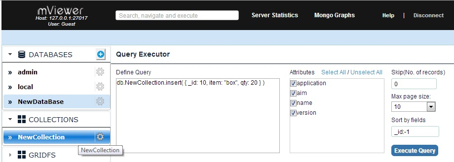

mViewer provides the facility of executing the queries right from it using Query Executor, thus eliminating the dependency on MongoDB terminal to execute the queries.
Query Executor is provided at DB, Collection and GridFS and Users and Indexes levels. Clicking on selected DB or collection or GridFS or Users and Indexes displays Query Executor on the right side of the page. Query Executor displayed for a particular DB will also performs operations on other DB's or collections aswell..


